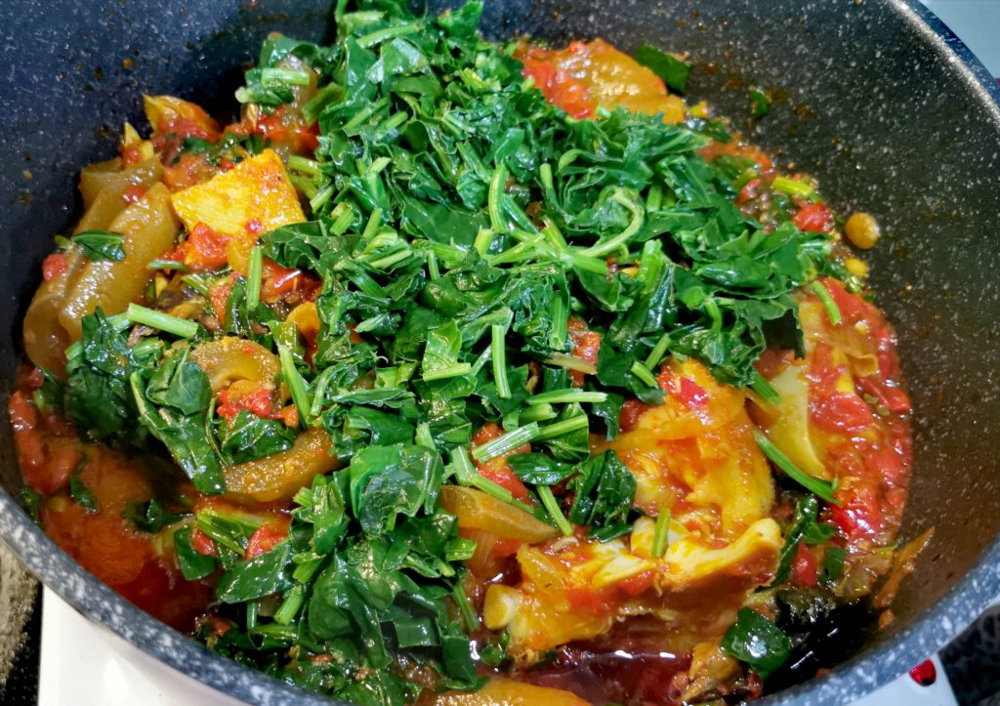

Efo riro(soup)

Description: A very popular Nigerian soup
prep time: 30 MINUTES||cook time: 30 MINUTES||additional time: 5 MINUTES||total time: 1 HOUR 5 MINUTES
Efo riro is the soup for you , If you love a rich, spicy and flavorful soup.
It is very popular in western Nigeria.
Ingredients used:
- Prawn
- Spinach leaves
- Smoked fish
- Red bell pepper
- Locust beans
- Cow skin
- spices(3 teaspoons salt,magii seasoning,etc)
STEPS FOR COOKING
- eason and cook the assorted meat and stock fish with onions
, stock cube, a little salt and other seasoning of choice.
Cook until the liquid in the pot is well absorbed(dried up)
and the meat and stock fish are tender .
- In another dry pot, heat up the palm oil.
Add chopped onions and fry for a minute.
Add the iru and fry for 20 seconds; add the ground crayfish and stir fry for 10 seconds.
- Now add the blended pepper, mix and add the seasoning cubes/powder and salt to taste.
Stir and simmer on medium heat for 20 minutes. Stir constantly to prevent burning.
- Now add the precooked stock fish and washed dry fish. Mix thoroughly,and simmer for 7 minutes.
Stir and taste for add seasoning and salt and add if necessary
- Add the assorted meat, stir well and simmer for 3 minutes. After 3 minutes,
add the vegetables mix well and leave to simmer for 3 more minutes and your delicious Efo Riro soup is ready.